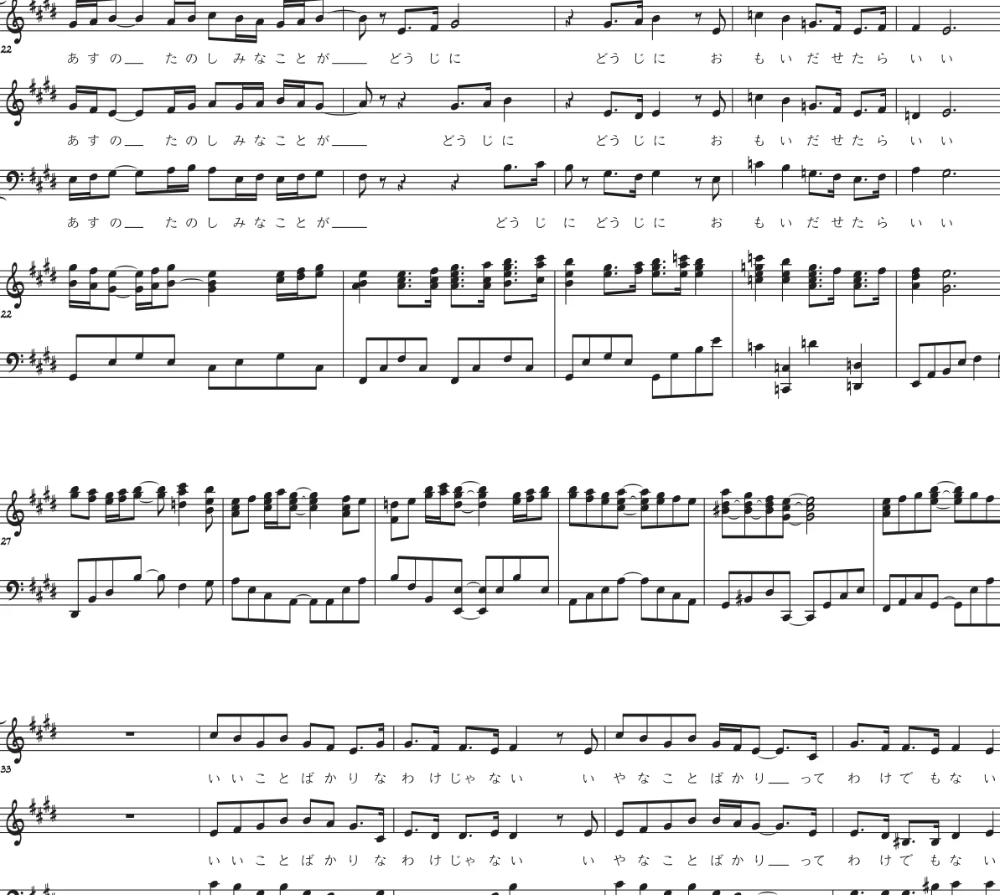
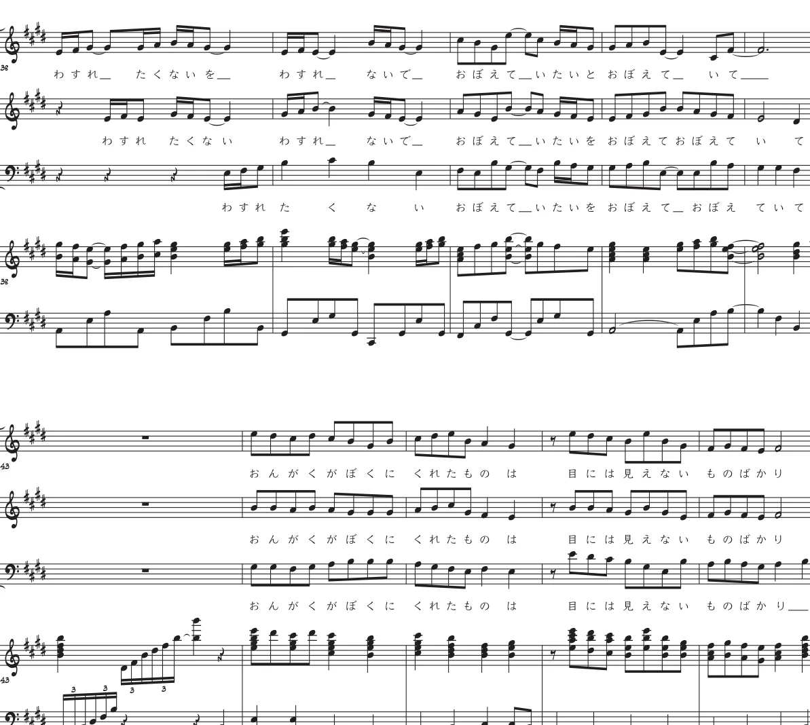

WORKS / CHORAL / 2023
願い
01 / LISTEN
音源を聴く
願い
DEMO / 4:01
これは制作デモ音源であり、実際の合唱演奏ではありません。
02 / LYRICS
言葉を読む
歌詞集「音楽の風景」
歌詞を読む →03 / SCORE PREVIEW
楽譜を少し見る


総譜・パート譜の全文ダウンロードは公開していません。
01 / LISTEN
DEMO / 4:01
これは制作デモ音源であり、実際の合唱演奏ではありません。
02 / LYRICS
歌詞集「音楽の風景」
歌詞を読む →03 / SCORE PREVIEW


総譜・パート譜の全文ダウンロードは公開していません。